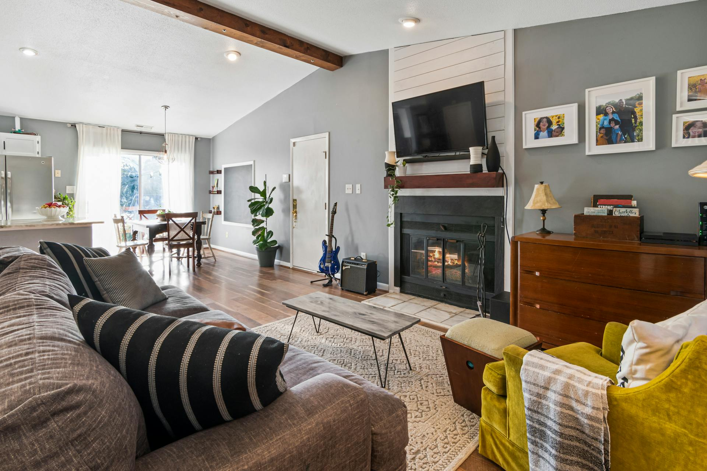

April 2026
Let’s be honest—creating a cosy home isn’t about following strict design rules or making everything look picture-perfect. It’s about how your space feels at the end of a long day. The good news? A few small, thoughtful changes can completely transform your home into a place you actually want to sink into (and maybe never leave).
- lighting choices
- Natural Materials
- Add Texture
- Layer Your Lighting
- Arrange for Comfort
- Go for Softer Shapes
- Make It Personal
- Bring in Some Greenery
